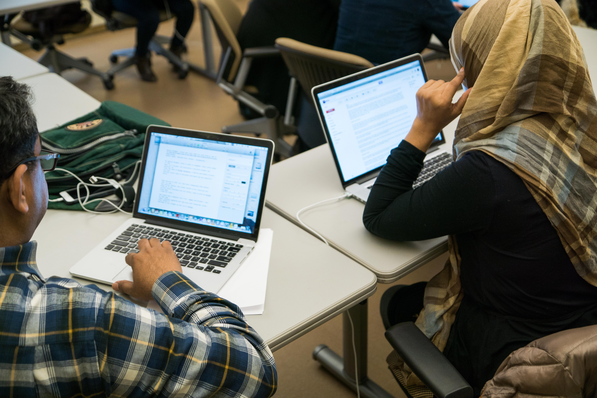

|
|
|
|
|
As we round out April, the maturing policy landscape for news is reaching a significant milestone. The inaugural annual report from Rebuild Local News (RLN) reveals that more than $129 million in public support for local news was secured between 2020 and 2025. For CCM, this progress is especially vital, as it centers on our model of government advertising set-aside legislation. By partnering with RLN, we have been advancing the NYC advertising equity model as a national blueprint, ensuring that as public support grows, it is strategically directed toward the community and ethnic media sectors that have historically been sidelined in traditional local news funding.
This week’s bulletin is designed to help you leverage that momentum. Below, you will find opportunities to build the leadership "muscles" needed to navigate this changing environment, trainings on everything from grant writing to digital surveillance, and key research on the evolving role of creator journalists and news aggregators.
But first, an urgent call to action: May 1 is the absolute final deadline to apply for J+’s flagship Executive Program in News Innovation and Leadership. This MBA-style program is specifically for leaders who want to move from isolated survival to collective power.
Apply for the Executive Program here right now, before the May 1 deadline.
Capitalizing on this sector-wide momentum requires a balance of immediate action and strategic foresight. In the sections that follow, we provide the research, tools, and professional pathways to support your newsroom’s ongoing growth and impact.
|

Photo by Julius Motal |
One Good Read: Understanding U.S. Indie Info Providers

CNTI Study: The Rise of the "Creator Journalist"
- The Blueprint: A new study by the Center for News, Technology & Innovation (CNTI) exploring the rise of independent information providers. The study delves into who these "indie" providers are, the communities they serve, and their growing role in a rapidly changing media ecosystem.
- The Gain: We now know more about creator journalists than ever before. This read offers critical insight into how these independent voices are filling information gaps and what their growth means for the future of the journalism industry.
- Read the CNTI study here and check out a full write-up here.
|
Professional Growth Opportunities
CCM Event Happening TODAY, April 30
Journalism Under Pressure: Practical Tools for Crisis Management and Resilience Building
- The Blueprint: This 90-minute participatory webinar, organized by CCM and being held today at 2:00 pm ET, is led by the Media Resilience Network (MDRnet). The session features speakers Luisa Ortiz Pérez, César Montesano and Dagmar Thiel, and focuses on identifying stress and burnout indicators in newsrooms. It includes practical exercises on emotional management, active listening, and peer-support skills adapted specifically for the journalistic context.
- The Gain: Journalists and media leaders frequently navigate burnout and systemic exclusion. This webinar provides the tools for emotional planning and care awareness, helping leaders protect the mental and organizational health of their newsrooms in a rapidly changing world.
- Register for the Crisis Management webinar today before 2:00 pm ET.
Upcoming Deadlines
Executive Program in News Innovation and Leadership | Newmark J-School’s J+
- The Blueprint: A year-long, hybrid certificate program for news media leaders running from August 2026 to June 2027. The curriculum trains a diverse cohort of leaders to navigate the intersections of editorial strategy, product development, and business sustainability.
- The Gain: Break the isolation of leadership by joining a global network of changemakers. You will gain the cross-functional skills needed to develop new revenue models and lead sustainable transformations within your newsroom.
- Apply for the Executive Program here by May 1.
Nonprofit News Business Certificate | Newmark J-School’s J+
- The Blueprint: A specialized program focused on the mechanics of running a successful nonprofit news organization, covering everything from diversified revenue to board management.
- The Gain: Essential training for those looking to transition to or strengthen a nonprofit model.
- Mark your calendars: Applications open on May 4.
News Product Management Certification (NPMC)
- The Blueprint: This certification equips journalists and media professionals with the framework to manage news products from conception to launch.
- The Gain: Learn how to align your newsroom’s journalism with sustainable product strategies. If you missed the live info session, you can watch the recording here.
- Apply for the NPMC here by May 8.
|
Trainings, Courses, and Resources
Substack for Journalists: Growing Your Audience and Impact | Knight Center
- The Blueprint: This online workshop ($40) on May 20, focuses on utilizing Substack to build independent, sustainable newsletters that resonate with specific community audiences.
- The Gain: Master the tools of the "creator economy" to scale your reporting impact and build direct-to-audience revenue streams.
- Register for the Substack course here.
Grant Writing for Journalists | Poynter
- The Blueprint: A practical course ($99) designed to help journalists and newsroom leaders master the art of the grant proposal.
- The Gain: Learn how to effectively communicate your newsroom’s impact to funders to secure the capital needed for resource-intensive reporting.
- Register for the Grant Writing course here.
Inaugural Annual Report | Rebuild Local News
- The Blueprint: The coalition’s first annual report captures a pivotal year of progress in the fight for public policy support for local news. It highlights the launch of the Local Journalist Index and the success of Illinois’ refundable tax credit, which supported over 260 journalist jobs.
- The Gain: Use this data to understand the maturing policy landscape and the new mechanisms available for securing public support for local newsrooms.
- Access the Rebuild Local News report here.
Analysis: Navigating News Aggregators | The Magpie Project
- The Blueprint: A framework comparing the largest news aggregation platforms (Google News, Apple News, etc.) and how they align with different audience strategies.
- The Gain: Use this analysis to decide which platforms are worth your newsroom’s time and find the direct starting points for each platform's publisher center.
- Access the Aggregator Analysis here.
Federal Surveillance Tools and Tactics Explainer | The Journalist’s Resource
- The Blueprint: A comprehensive explainer on the tools and tactics used in federal surveillance, providing vital context for journalists covering privacy, law enforcement, and civil rights.
- The Gain: Equip yourself with the technical knowledge to protect your sources and report accurately on the intersection of technology and state power.
- Access the Surveillance Explainer here.
Developing a Data State of Mind: Key Tips for Editors | Global Investigative Journalism Network
- The Blueprint: A guide for editors on how to integrate data-driven thinking into the daily editorial workflow.
- The Gain: Learn how to identify data-driven story angles in everyday beats, ensuring your newsroom stays competitive in an increasingly quantitative media landscape.
- Access the Data Tips for Editors here.
Analysis: Local News and Civic Discourse | American Press Institute
- The Blueprint: This report argues that the future of local news depends on proving its essential role in civic discourse, offering strategies for newsrooms to demonstrate their public utility to funders and the community.
- The Gain: Use these insights to refine your "value proposition" when speaking to donors or applying for the public support mentioned in this month's opener.
- Read the full API report here.
|
Calls for Applications and Submissions
South Asian Trailblazers Fellowship
Local Reporting Network | ProPublica
- The Blueprint: ProPublica is seeking to partner with local newsrooms to support investigative projects that would otherwise be out of reach. For selected partnerships, ProPublica provides a grant to the newsroom to cover the salary (up to $80,000 plus benefits) for one full-time reporter to work on a yearlong investigation.
- The Gain: Benefit from ProPublica’s extensive editorial, data, and research resources while maintaining your local focus. Reporters work from their home newsrooms while receiving mentorship and guidance from a senior ProPublica editor.
- Learn how to apply here by May 1
Pillars Bylines Fellowship | Pillars Fund
- The Blueprint: A fellowship for early-career Muslim freelance journalists with 3-5 years of professional experience, offering unrestricted funding, three fully funded in-person retreats, craft and pitching workshops, and exclusive industry connections.
- The Gain: Receive a $35,000 award and professional editing and publication support to elevate your reporting on culture in the United States.
- Apply for the Pillars Bylines Fellowship here by May 15
Impact Fund for Reporting on Health Equity and Health Systems | USC Annenberg
- The Blueprint: This fund supports ambitious investigative or explanatory projects on systemic racism in public health, health care policy, and medical practice, including inequities in treatment and access to care.
- The Gain: Grantees receive a $2,000–$10,000 grant and five months of professional mentorship from a veteran journalist.
- Apply for the Health Equity Impact Fund here by May 12
|
Jobs
Strategic Communications Manager (News & Information) | Pew Research Center
- The Blueprint: A full-time, hybrid role based in Washington, DC, responsible for promoting the work of Pew Research Center's News and Information team. You will develop comprehensive audience plans for major research studies, manage dissemination to traditional and non-traditional media (including creators and podcasters), and prepare spokespeople for interviews. Requires 5-10 years of experience and advanced media relations skills.
- The Gain: Influence the narrative of the media landscape within a "gold-standard" institution. The role offers project leadership opportunities, autonomy, and space for travel to attend professional development conferences.
- Apply for the Communications Manager role here.
Contract LGBTQ+ Reporter | The 19th
- The Blueprint: A part-time contract role (32 hours/week) running from early June through late November 2026. This remote position focuses on reporting, writing, and producing coverage of LGBTQ+ issues, specifically their intersection with politics and elections. Deliverables include one to two stories a week. Requires 3+ years of experience and familiarity with WordPress.
- The Gain: Contribute to a premier non-profit newsroom during a critical election season. The contract rate is $50 per hour, with an expected total contract value of $38,400.
- Apply for the LGBTQ+ Reporter role here.
|
| Thank you for the essential work you do every day to keep our communities informed. As the media landscape evolves, we're committed to equipping you with the practical tools and resources to navigate these changes with confidence and clarity. We look forward to connecting at our upcoming sessions and continuing to learn about the important work you're doing.
Please share any community media news, job postings, opportunities, resources, and reporting you would like amplified to Newsletter Editor LaMonte Guillory at lamonte.guillory@journalism.cuny.edu.
|
|
|